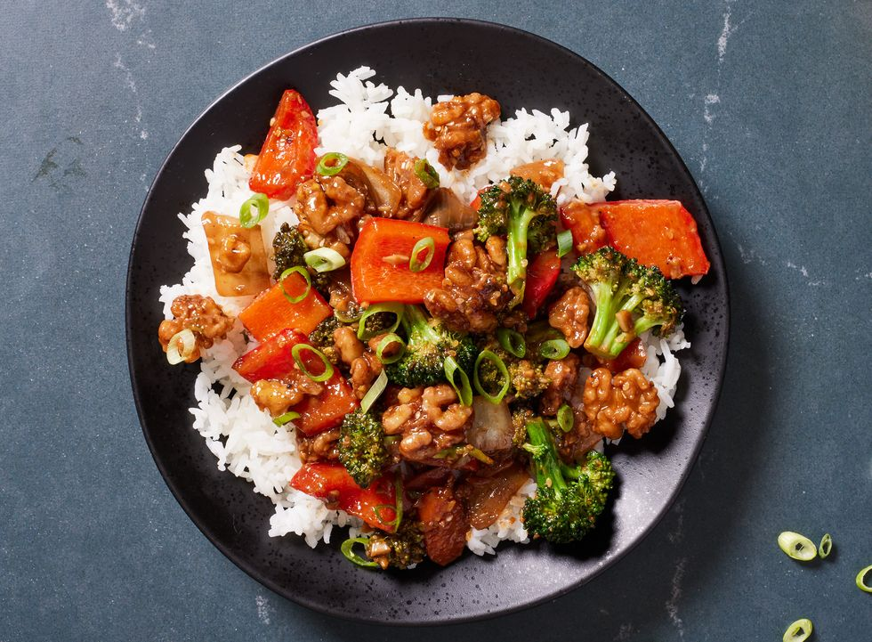

Walnut Broccoli Stir-Fry.

Ingredients: 4 Servings
- 2 tbsp. canola oil, divided
- 1 c. walnuts
- 1 tbsp. sesame seeds
- 1 tbsp. granulated sugar
- Kosher salt
- 1 medium yellow onion, chopped into 1" pieces
Directions
- In a large skillet over medium-low heat, heat 2 teaspoons oil. Add walnuts, sesame, sugar, and a pinch salt, and stir until sugar is just beginning to caramelize, 2 to 3 minutes. Transfer to a plate.
- Return skillet to medium heat and heat remaining oil. Add onion, garlic, ginger, carrots, broccoli, and soy sauce, and cook, stirring occasionally, until broccoli is bright green, 5 minutes. Add red bell pepper and stir until slightly softened, 3 minutes.
- In a medium bowl, whisk together broth, cornstarch, sriracha, oyster sauce, white pepper, paprika, black pepper, and sesame oil. Add cornstarch slurry to skillet and cook until sauce is thickened, stirring constantly, 2 to 3 minutes. Remove from heat, stir in lime juice and MSG if using, then fold in caramelized walnuts.
- Garnish with scallions, if desired, before serving with rice.